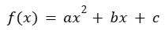
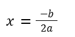
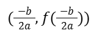

¿Dónde está el vértice?
El vértice de la parábola es un punto clave que representa su punto más bajo (mínimo) o más alto (máximo), dependiendo de la orientación de la curva.
Es el punto donde la función cambia de crecer a decrecer, o viceversa.
Para una función cuadrática de la forma:

el vértice se calcula con la fórmula:

Luego, ese valor se sustituye en la función para encontrar la coordenada de y:

De esta forma, el vértice queda expresado como el par ordenado:
Nota: El vértice también define el eje de simetría de la parábola con mayor precisión.